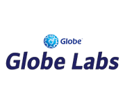

Rails Girls comes to Manila! During the free two-day workshop, we'll dive into the magical world of Ruby on Rails.
Follow @railsgirlsMLA on Twitter and Like Rails Girls Manila Facebook fan page.
You learn designing, prototyping and coding with the help from our coaches.
You need your own laptop, curiosity and a sprinkle of imagination!
Want to help? We are looking for sponsors and Rails coaches. Email us.
| 17:00 - 20:00 |
Installation partyGet to know the attendees a little bit beforehand. Bring your laptop if you can, so we can install Ruby on Rails for you.Where: Unit 2701 in the 27th floor of Discovery Suites 25 ADB Avenue, Ortigas Center, Pasig City 1600 Google Map |
|---|
| 9:00 - 9:30 |
RegistrationDuring the morning, we'll install Ruby on Rails on your computer and maybe start with the talks early. We highly suggest you attend the installation party.Where: Unit 502 5/F Orient Square Bldg. |
|---|---|
| 9:30 - 10:00 |
WelcomeOutline of the day & word from our sponsors |
| 10:00 - 10:25 |
Understanding Web AppsAn Introduction to Software Engineering & Best Practices on Designing & Developing a Web ApplicationSpeaker: Maricris NonatoMaricris Nonato is an IT enthusiast who loves the challenge of defying technical constraints to produce the best, most elegant platforms for the international development community. She brings twelve years of experience in software development for web and stand alone applications to her role now in which she manages the internal IT team at Devex utilizing her superb planning, estimation, development, testing and time management skills. |
| 10:25 - 11:00 |
An Introduction to Ruby ProgrammingSpeaker: Bryan BibatThis is the "Look how cool Ruby is!" talk by Bryan BibatVisit Tryruby.org because his introduction may be more of advanced Ruby programming than the basics.Bryan Bibat is a freelance software engineer based in Taguig City, Philippines. He wrote "Rails 3.0: a free student manual" and created the RailsFTW project. He's also currently DevCon's VP for Technology and is one of the lead evangelists for the Philippine Ruby Users Group. Let's get coding! |
| 11:00 - 12:00 |
WORKSHOPJumpstart your first web application! |
| 12:00 - 13:30 | Lunch |
| 13:30 - 13:50 |
Deploying a Ruby on Rails ApplicationSpeaker: Anna GabuteroAnna Gabutero is a DevOps Engineer at Friendster. They have been using Ruby since 2007. |
| 13:50 - 14:10 |
Lightning talks from coachesParticipants can ask anything about Ruby or Ruby on Rails from the coaches. The topics may be about Ruby programming, deployment and very basic things you will need to move forward and create Ruby on Rails applications. |
| 14:10 - 17:30 |
WORKSHOPExtend your application. |
| 18:30 onwards |
AFTERPARTYLocation TBA. |


Applications closed: November 3rd
Acceptances informed on or before: November 7th
Unit 502 5/F Orient Square Bldg.
F. Ortigas Jr. (formerly Emerald Ave.)
Ortigas Center, Pasig City 1605
Google Map
This is a project of the Philippine Ruby Users Group (PhRUG) supported by some partners.
Want to help? We're looking for partners & sponsors for the non-profit event! Email us!
DevCon is a non-stock, non-profit organization which aims to promote the "IT Pinoy Talent" mainly by providing a unique venue for IT educators and students, IT professionals and IT enthusiasts to Sync, Support and Succeed.
WebGeek is a community that serves as a venue for Filipino geeks, developers, designers and startups.
We'd like to thank our sponsors for making this possible!
Aelogica is the premier Ruby on Rails and mobile development company with operations in the Philippines. They make awesome stuff — from websites
to mobile apps — for customers around the world. They are a dedicated team of developers, designers, experimentors, and problem-solvers with a passionate drive to make their customers happy.
SMART Communications, Inc. is a telecommunications company in the Philippines. It is a wholly owned mobile phone and Internet service subsidiary of the Philippine Long Distance Telephone Company (PLDT).
As a responsible corporate citizen, SMART is committed in strengthening community service initiatives on various fronts. They promote general awareness of mobile apps development and "technopreneurship" through related groups
like the IdeaSpace Foundation. Join the SMART Developer Network, SMART Communications' developer community program.
Proudcloud is a new kind of web engineering firm with a relentless passion for innovation. They strive to share this passion with our clients to create a mutual desire to build great things.
SourcePad is a stable, rapidly growing company. Its environment is full of passionate, creative and intelligent people who want to create the next generation of interactive software and application.
Exist is a software development and technology company with over 150 innovators who work from offices in Manila and Cebu.
 Launched by leading communications company Globe Telecom in 2008, Globe Labs is an innovative community composed of vibrant IT professionals, students and business managers, with primary focus on mobile and future technologies which can be later on deployed to the market. Join us, visit www.globelabs.com.ph .
How much does the workshop cost? Nothing, it's FREE! You just need to be excited!
Who is this aimed for? Women of any age with basic knowledge of working with a computer. We've had people of all ages taking part. Most of the discussions are given in English or Tagalog.
I know how to program - How can I help? We’re also looking for people to be coaches. We’ll have a two to three-hour workshop before the event to walk you through the curriculum. Email us!